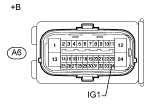
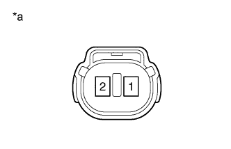
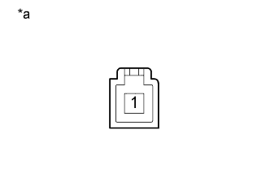

АНТИБЛОКИРОВОЧНАЯ СИСТЕМА ТОРМОЗОВ > Контрольная лампа состояния тормозной системы остается включенной |
| 1.ПРОВЕРЬТЕ СИСТЕМУ ПЕРЕДАЧИ ДАННЫХ CAN |
Проверьте, выводятся ли DTC системы передачи данных CAN (для моделей с левосторонним рулевым управлением без системы посадки и запуска Нажмите здесь, для моделей с правосторонним рулевым управлением без системы посадки и запуска Нажмите здесь).
| Результат | Следующий шаг | |
| Коды DTC не отображаются | А | |
| код DTC отображается | для моделей с левосторонним рулевым управлением без системы посадки и запуска | B |
| Код DTC отображается | для моделей с правосторонним рулевым управлением без системы посадки и запуска | C |
|
| ||||
|
| ||||
| А | |
| 2.УБЕДИТЕСЬ В ТОМ, ЧТО ЭБУ СИСТЕМЫ ПРОТИВОСКОЛЬЖЕНИЯ ПОДСОЕДИНЕН НАДЕЖНО |
Проверьте подсоединение разъема ЭБУ системы противоскольжения.
|
| ||||
| OK | |
| 3.ПРОВЕРЬТЕ НАПРЯЖЕНИЕ НА КОНТАКТЕ (IG1) |
Отсоедините разъем A6 ЭБУ системы противоскольжения.
|  |
Измерьте напряжение в соответствии со значениями, приведенными в таблице.
| Контакты для подключения диагностического прибора | Положение переключателя | Заданные условия |
| A6-34 (IG1) - масса | Зажигание включено | 11 - 14 В |
| *a | Вид спереди разъема со стороны жгута проводов: (к ЭБУ системы противоскольжения) |
|
| ||||
| OK | |
| 4.ПРОВЕРЬТЕ ЖГУТ ПРОВОДОВ И РАЗЪЕМ (КОНТАКТ GND1) |
Отсоедините разъем A6 ЭБУ системы противоскольжения.
Измерьте сопротивление в соответствии со значениями, приведенными в таблице ниже.
| Контакты для подключения диагностического прибора | Условие | Заданные условия |
| A6-1 (GND1) - масса | Всегда | Менее 1 Ом |
|
| ||||
| OK | |
| 5.СНИМИТЕ ПОКАЗАНИЯ ПОРТАТИВНОГО ДИАГНОСТИЧЕСКОГО ПРИБОРА (PARKING BRAKE SW) |
Выключите зажигание.
Подсоедините портативный диагностический прибор к DLC3.
Установите замок зажигания в положение ON (ВКЛ).
Включите портативный диагностический прибор.
Войдите в следующие меню: Chassis / ABS/VSC/TRC / Data List.
| Информация на дисплее прибора | Измеряемая величина / диапазон измерения | Нормальное состояние | Замечание по диагностике |
| Parking Brake SW | Состояние выключателя стояночного тормоза / ON (ВКЛ) или OFF (ВЫКЛ) | ON (ВКЛ): стояночный тормоз включен OFF (ВЫКЛ): стояночный тормоз выключен | - |
С помощью портативного диагностического прибора проверьте работу выключателя при управлении педалью стояночного тормоза.
|
| ||||
| OK | |
| 6.ПРОВЕРЬТЕ ДАТЧИК УРОВНЯ ТОРМОЗНОЙ ЖИДКОСТИ |
Выключите зажигание.
Снимите крышку наливного отверстия бачка и сетчатый фильтр.
Отсоедините разъем A44 датчика уровня тормозной жидкости.
|  |
Измерьте сопротивление в соответствии со значениями, приведенными в таблице ниже.
| Контакты для подключения диагностического прибора | Положение переключателя | Заданные условия |
| 1 - 2 | Датчик выключен (поплавок вверху) | 10 кОм или более |
| Датчик включен (поплавок внизу) | Менее 1 Ом |
| *a | Устройство с неподсоединенным жгутом проводов (датчик уровня тормозной жидкости) |
|
| ||||
| OK | |
| 7.ПРОВЕРЬТЕ ЖГУТ ПРОВОДОВ И РАЗЪЕМ (ЩИТОК ПРИБОРОВ – ДАТЧИК УРОВНЯ ТОРМОЗНОЙ ЖИДКОСТИ) |
Отсоедините разъем G6 щитка приборов.
Отсоедините разъем A44 датчика уровня тормозной жидкости.
Измерьте сопротивление в соответствии со значениями, приведенными в таблице ниже.
| Контакты для подключения диагностического прибора | Состояние | Заданные условия |
| G6-31 (SW) - A44-1 | Всегда | Менее 1 Ом |
| G6-31 (SW) - масса | Всегда | 10 кОм или более |
| A44-2 - масса | Всегда | Менее 1 Ом |
|
| ||||
| OK | |
| 8.СНИМИТЕ ПОКАЗАНИЯ ПОРТАТИВНОГО ДИАГНОСТИЧЕСКОГО ПРИБОРА (КОНТРОЛЬНАЯ ЛАМПА СОСТОЯНИЯ ТОРМОЗНОЙ СИСТЕМЫ) |
Выключите зажигание.
Подсоедините портативный диагностический прибор к DLC3.
Установите замок зажигания в положение ON (ВКЛ).
Включите портативный диагностический прибор.
Войдите в следующие меню: Chassis / ABS/VSC/TRC / Data List.
| Информация на дисплее прибора | Измеряемая величина / диапазон измерения | Нормальное состояние | Замечание по диагностике |
| Brake Warning Light | Состояние контрольной лампы состояния тормозной системы / ON (ВКЛ) или OFF (ВЫКЛ) | OFF (ВЫКЛ) | - |
Выполняя испытание Brake Warning Light в режиме Active Test, следите за параметром Brake Warning Light в списке Data List (Нажмите здесь).
| Информация на дисплее прибора | Испытываемое устройство | Диапазон регулирования | Замечание по диагностике |
| Brake Warning Light | Контрольная лампа BRAKE | Включение / выключение контрольной лампы аварийного состояния | Следите за индикацией на щитке приборов |
| Результат | Следующий шаг | |
| Экран Data List | Показания Data List при изменении установки ON/OFF (ВКЛ/ВЫКЛ) в режиме Active Test | |
| ON (ВКЛ) | Не изменяется между ON (ВКЛ) и OFF (ВЫКЛ) | А |
| Изменяется между ON (ВКЛ) и OFF (ВЫКЛ) | B | |
| OFF (ВЫКЛ) | Не изменяется между ON (ВКЛ) и OFF (ВЫКЛ) | А |
| Изменяется между ON (ВКЛ) и OFF (ВЫКЛ) | B | |
|
| ||||
| А | ||
| ||
| 9.ПРОВЕРЬТЕ ВЫКЛЮЧАТЕЛЬ СТОЯНОЧНОГО ТОРМОЗА |
Выключите зажигание.
Отсоедините разъем G77 выключателя стояночного тормоза.
|  |
Измерьте сопротивление в соответствии со значениями, приведенными в таблице ниже.
| Контакты для подключения диагностического прибора | Положение переключателя | Заданные условия |
| 1 - масса | Выключатель стояночного тормоза в состоянии ON (ВКЛ) (штырь выключателя не нажат) | Менее 1 Ом |
| Выключатель стояночного тормоза в состоянии OFF (ВЫКЛ) (штырь выключателя нажат) | 10 кОм или более |
| *a | Устройство с неподсоединенным жгутом проводов (выключатель стояночного тормоза) |
|
| ||||
| OK | |
| 10.ПРОВЕРЬТЕ ЖГУТ ПРОВОДОВ И РАЗЪЕМ (ВЫКЛЮЧАТЕЛЬ СТОЯНОЧНОГО ТОРМОЗА – ГЛАВНЫЙ ЭБУ КУЗОВА (РАСПРЕДЕЛИТЕЛЬНЫЙ БЛОК СО СТОРОНЫ ВОДИТЕЛЯ)) |
Отсоедините разъем 2D главного ЭБУ кузова (распределительный блок со стороны водителя в сборе).
Отсоедините разъем G77 выключателя стояночного тормоза.
Измерьте сопротивление в соответствии со значениями, приведенными в таблице ниже.
| Контакты для подключения диагностического прибора | Состояние | Заданные условия |
| 2D-23 (PKB) - G77-1 | Всегда | Менее 1 Ом |
| 2D-23 (PKB) - масса | Всегда | 10 кОм или более |
|
| ||||
| OK | ||
| ||